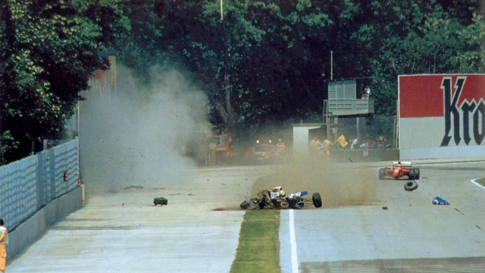

Trágica morte

- Ao participar da terceira corrida da temporada, o GP de San Marino, em Ímola, Senna rapidamente fez a terceira melhor volta da corrida, seguido por Michael Schumacher. Senna iniciara o que seria a sua última volta na F1; ele entrou na curva Tamburello (a mesma em que bateu Nelson Piquet com a Williams em 1987 e também onde bateu Berger com a Ferrari em 1989) e perdeu o controle do carro devido a uma barra de direção quebrada, seguindo reto e chocando-se violentamente contra o muro de concreto. A telemetria mostrou que Senna, ao notar o descontrole do carro, ainda conseguiu, nessa fração de segundo, reduzir a velocidade de cerca de 300 km/h (195 mph) para cerca de 200 km/h (135 mph). Os oficiais de pista chegaram à cena do acidente e, ao perceber a gravidade, só puderam esperar a equipe médica. Por um momento a cabeça de Senna se mexeu levemente, e o mundo, que assistia pela TV, imaginou que ele estivesse bem, mas esse movimento havia sido causado por um profundo dano cerebral. Senna foi removido de seu carro pelo Professor Sid Watkins, neurocirurgião de renome mundial pertencente aos quadros da Comissão Médica e de Segurança da Fórmula 1 e chefe da equipe médica da corrida, e recebeu os primeiros socorros ainda na pista, ao lado de seu carro destruído, antes de ser levado de helicóptero para o Hospital Maggiore de Bolonha onde, poucas horas depois, foi declarado morto.